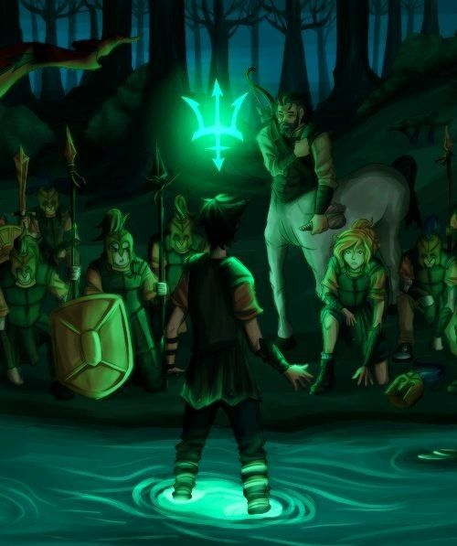

Rick Riordan, autor de la saga ha creado varias exitosas sagas literarias como la serie de 5 libros Percy Jackson y los dioses del Olimpo que combina mitología griega con aventuras modernas, protagonizada por un joven llamado Percy Jackson. Percy descubre que es un semidiós, hijo de Poseidón, lo que lo convierte en parte de un mundo secreto lleno de dioses, monstruos y profecías. A lo largo de la serie, Percy y sus amigos (Annabeth Chase, hija de Atenea, y Grover el sátiro) enfrentan desafíos peligrosos mientras intentan evitar que los antiguos dioses del Olimpo entren en conflicto y desaten una guerra.
Cada libro de la saga presenta a Percy enfrentándose a nuevas amenazas, desde monstruos mitológicos hasta antiguos enemigos de los dioses, mientras trata de entender su lugar en el mundo. A lo largo de la serie, Percy también se enfrenta a una gran profecía que podría determinar el futuro de los dioses y los humanos.
La saga se caracteriza por su mezcla de humor, acción y elementos de la mitología griega, manteniendo una narrativa accesible y emocionante para jóvenes y adultos. Los libros exploran temas como la amistad, la valentía, la lealtad y el descubrimiento de uno mismo, mientras Percy aprende a aceptar su destino y a luchar por lo que es correcto. Además de estos, la saga ha dado pie a varios spin-offs y secuelas, expandiendo aún más el universo mitológico de Percy Jackson. Como la saga "Heroes del Olimpo" o "Las pruebas de Apolo" y muchas otras más, por lo que te invito a revisar nuestra sección llamada "Libros" donde encontraras TODOS los libros y el orden de como leerlos.